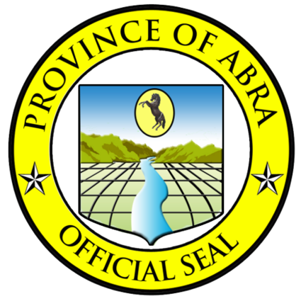

ABRA
PHILIPPINES
Home
Tourist Spots
All Tourist Spots
Kili Falls & Hot Spring
Kaparkan Falls
Apao Rolling Hills
Piwek Rock Formation
Don Mariano Marcos Bridge
Tayum Church & Heritage Houses
Gabriela Carino-Silang Gallery of Fine Arts
Teofilo Garcia Tabungaw Guord Hats
Abel Loom Weaving in La Paz
Bangued
Abra Cuisine
All Abra Cuisine
Lechon de Abra
Sinuman in Abra
Patupat
Diningding
Sinanglaw
Crispy Dinuguan
Hotels to Stay
Hotel List
Strutz Art Garden Resort
Hotel Luna
Casa Cecilia Hotel
Hotel Lola Natividad
Hotel Lapira
Events in Abra
All Festivals
Abrenian Kawayan Festival
Dapil Festival
Arya Abra Festival
Tingguian Festival
Book Now
Contact Us
Top 10 Tourist Spots
Home
All Tourist Spots
All
Tourist Attraction
Museums
Famous Structures
Kili Falls & Hot Spring
Kaparkan Falls
Apao Rolling Hills
Piwek Rock Formation
Don Mariano Marcos Bridge
Tayum Church
Gabriela Carino-Silang Gallery of Fine Arts
Teofilo Garcia Tabungaw Guord Hats
Abel Loom Weaving in La Paz
Bangued